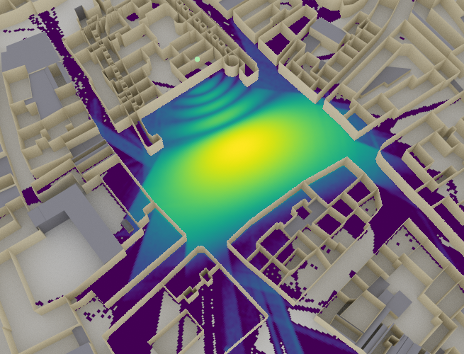

Radio Map Solvers#
A radio map solver computes a radio map for a given Scene and
for every Transmitter.
Sionna provides a radio map solver (RadioMapSolver) which currently
supports specular reflection (including specular chains), diffuse reflection,
refraction, and first-order diffraction. It computes a path gain map, from which a
received signal strength (RSS) map or a signal to interference plus noise ratio
(SINR) map can be computed.
- class sionna.rt.RadioMapSolver[source]#
Class that implements the radio map solver
This solver generates a radio map for each transmitter within the scene. For any given transmitter, the radio map is calculated over a measurement surface that is segmented into flat cells. Each cell \(i\) in the radio map is associated with the quantity:
(55)#\[g_i = \frac{1}{\lvert C_i \rvert} \int_{C_{i}} \lvert h(s) \rvert^2 ds.\]Here, \(\lvert h(s) \rvert^2\) represents the sum of the squared amplitudes of the path coefficients \(a_i\) at the position \(s=(x,y)\), assuming an ideal isotropic receiver. The integral is evaluated over the cell \(C_i\), with \(ds\) being the infinitesimally small surface element, defined as \(ds=dx \cdot dy\). The value \(g_i\) can be interpreted as the average
path_gainacross a cell. This solver approximates \(g_i\) using Monte Carlo integration. For further details, refer to the section on the radio map solver of the Sionna RT Technical Report.The path gain can be transformed into the received signal strength (
rss) by multiplying it with the transmitpower:\[\mathrm{RSS}_{i} = P_{tx} g_{i}.\]In scenarios with multiple transmitters, the signal-to-interference-plus-noise ratio (SINR) for a specific transmitter \(k\) is calculated as follows:
\[\mathrm{SINR}^k_{i}=\frac{\mathrm{RSS}^k_{i}}{N_0+\sum_{k'\ne k} \mathrm{RSS}^{k'}_{i}}\]where \(N_0\) [W] represents the thermal noise power of the scene (
thermal_noise_power), which is determined by:\[N_0 = B \times T \times k.\]In this equation, \(B\) [Hz] is the bandwidth of the transmission (
bandwidth), \(T\) [K] is the temperature of the scene (temperature), and \(k = 1.380649 \times 10^{-23}\) [J/K] is the Boltzmann constant.This solver supports arbitrary meshes as measurement surfaces, where each triangle in the mesh acts as a cell in the radio map. If a mesh is not provided, the solver computes the radio map over a rectangular measurement grid, which is defined by the parameters:
center,orientation,size, andcell_size. The resulting output is then a real-valued matrix of dimensions[num_cells_y, num_cells_x]for each transmitter, where:\[\begin{split}\texttt{num\_cells\_x} = \bigg\lceil\frac{\texttt{size[0]}}{\texttt{cell\_size[0]}} \bigg\rceil\\ \texttt{num\_cells\_y} = \bigg\lceil \frac{\texttt{size[1]}}{\texttt{cell\_size[1]}} \bigg\rceil.\end{split}\]An orientation of (0,0,0) aligns the radio map parallel to the XY plane, with the surface normal directed towards the \(+z\) axis. By default, the radio map is set parallel to the XY plane, spans the entire scene, and is positioned at an elevation of \(z = 1.5\text{m}\).
For transmitters equipped with multiple antennas, transmit precoding is applied as specified by the
precoding_vec. For each path \(n\) that intersects a radio map cell \(i\), the channel coefficients \(a_n\) and the angles of departure (AoDs) \((\theta_{\text{T},n}, \varphi_{\text{T},n})\) and arrival (AoAs) \((\theta_{\text{R},n}, \varphi_{\text{R},n})\) are determined. For further information, refer to the Primer on Electromagnetics.A “synthetic” array is simulated by introducing additional phase shifts, which are dependent on the antenna’s position relative to the transmitter and the AoDs. Let \(\mathbf{d}_{\text{T},k}\in\mathbb{R}^3\) represent the relative position of the \(k^\text{th}\) antenna (relative to the transmitter’s position) for which the channel impulse response is calculated. This can be accessed via the antenna array’s property
positions. Assuming a plane-wave model, the phase shift for this antenna is computed as:\[p_{\text{T},n,k} = \frac{2\pi}{\lambda}\hat{\mathbf{r}}(\theta_{\text{T},n}, \varphi_{\text{T},n})^\mathsf{T} \mathbf{d}_{\text{T},k}.\]The path coefficient for the \(k\text{th}\) antenna is then expressed as:
\[h_{n,k} = a_n e^{j p_{\text{T}, n,k}}.\]These coefficients form the complex-valued channel vector \(\mathbf{h}_n\) with a size of \(\texttt{num\_tx\_ant}\).
Finally, the coefficient for the equivalent SISO channel is given by:
\[h_n = \mathbf{h}_n^{\mathsf{T}} \mathbf{p}\]where \(\mathbf{p}\) denotes the precoding vector
precoding_vec. The product is a transpose (not a Hermitian) inner product:precoding_vecis applied without conjugation.Note#
This solver supports Russian roulette, which can significantly improve the efficiency of ray tracing by terminating rays that contribute little to the final result.
The implementation of Russian roulette in this solver consists in terminating a ray with probability equal to the complement of its path gain (without the distance-based path loss). Formally, after the \(d^{\text{th}}\) bounce, the ray path loss is set to:
\[\begin{split}a_d \leftarrow \begin{cases} \frac{a_d}{\sqrt{\min \{ p_{c},|a_d|^2 \}}}, & \text{with probability } \min \{ p_{c},|a_d|^2 \}\\ 0, & \text{with probability } 1 - \min \{ p_{c},|a_d|^2 \} \end{cases}\end{split}\]where \(a_d\) is the path coefficient corresponding to the ray (without the distance-based pathloss) and \(p_c\) the maximum probability with which to continue a path (
rr_prob). The first case consists in continuing the ray, whereas the second case consists in terminating the ray. When the ray is continued, the scaling by \(\frac{1}{\sqrt{\min \{ p_{c},|a_d|^2 \}}}\) ensures an unbiased map by accounting for the rays that were terminated. When a ray is terminated, it is no longer traced, leading to a reduction of the required computations.Russian roulette is by default disabled. It can be enabled by setting the
rr_depthparameter to a positive value.rr_depthcorresponds to the path depth, i.e., the number of bounces, from which on Russian roulette is enabled.Note#
The parameter
stop_thresholdcan be set to deactivate (i.e., stop tracing) paths whose gain has dropped below this threshold (in dB).Example#
import sionna from sionna.rt import load_scene, PlanarArray, Transmitter, RadioMapSolver scene = load_scene(sionna.rt.scene.munich) scene.radio_materials["marble"].thickness = 0.5 # Configure antenna array for all transmitters scene.tx_array = PlanarArray(num_rows=8, num_cols=2, vertical_spacing=0.7, horizontal_spacing=0.5, pattern="tr38901", polarization="VH") # Add a transmitters tx = Transmitter(name="tx", position=[8.5,21,30], orientation=[0,0,0]) scene.add(tx) tx.look_at(mi.Point3f(40,80,1.5)) solver = RadioMapSolver() rm = solver(scene, cell_size=(1., 1.), samples_per_tx=100000000) scene.preview(radio_map=rm, clip_at=15., rm_vmin=-100.)

- __call__(scene: sionna.rt.scene.Scene, center: mitsuba.Point3f | None = None, orientation: mitsuba.Point3f | None = None, size: mitsuba.Point2f | None = None, cell_size: mitsuba.Point2f = [[10, 10]], measurement_surface: mitsuba.Shape | sionna.rt.scene_object.SceneObject | None = None, precoding_vec: Tuple[drjit.cuda.ad.TensorXf, drjit.cuda.ad.TensorXf] | None = None, samples_per_tx: int = 1000000, max_depth: int = 3, los: bool = True, specular_reflection: bool = True, diffuse_reflection: bool = False, refraction: bool = True, diffraction: bool = False, edge_diffraction: bool = False, diffraction_lit_region: bool = True, seed: int = 42, rr_depth: int = -1, rr_prob: float = 0.95, stop_threshold: float | None = None, check_cells_area: bool = False, modified_scene: mitsuba.Scene | None = None) sionna.rt.radio_map_solvers.radio_map.RadioMap[source]#
Executes the solver
- Parameters:
scene (sionna.rt.scene.Scene) – Scene for which to compute the radio map
center (mitsuba.Point3f | None) – Center of the radio map measurement plane \((x,y,z)\) [m] as a three-dimensional vector. Ignored if
measurement_surfaceis provided. If set to None, the radio map is centered on the center of the scene, except for the elevation \(z\) that is set to 1.5m. Otherwise,orientationandsizemust be provided.orientation (mitsuba.Point3f | None) – Orientation of the radio map measurement plane \((\alpha, \beta, \gamma)\) specified through three angles corresponding to a 3D rotation as defined in (3). Ignored if
measurement_surfaceis provided. An orientation of \((0,0,0)\) or None corresponds to a radio map that is parallel to the XY plane. If not set to None, thencenterandsizemust be provided.size (mitsuba.Point2f | None) – Size of the radio map measurement plane [m]. Ignored if
measurement_surfaceis provided. If set to None, then the size of the radio map is set such that it covers the entire scene. Otherwise,centerandorientationmust be provided. Ifsizeis not an integer multiple ofcell_size, it is expanded toceil(size / cell_size) * cell_size.cell_size (mitsuba.Point2f) – Size of a cell of the radio map measurement plane [m]. Ignored if
measurement_surfaceis provided.measurement_surface (mitsuba.Shape | sionna.rt.scene_object.SceneObject | None) – Measurement surface. If set, the radio map is computed for this surface, where every triangle in the mesh is a cell in the radio map. If set to None, then the radio map is computed for a measurement grid defined by
center,orientation,size, andcell_size.precoding_vec (Tuple[drjit.cuda.ad.TensorXf, drjit.cuda.ad.TensorXf] | None) – Real and imaginary components of the complex-valued precoding vector. If set to None, then defaults to \(\frac{1}{\sqrt{\text{num\_tx\_ant}}} [1,\dots,1]^{\mathsf{T}}\).
samples_per_tx (int) – Number of samples per source (
>= 1)max_depth (int) – Maximum depth (
>= 0)los (bool) – Enable line-of-sight paths
specular_reflection (bool) – Enable specular reflections
diffuse_reflection (bool) – Enable diffuse reflections
refraction (bool) – Enable refraction
diffraction (bool) – Enable diffraction
edge_diffraction (bool) – Enable diffraction on free floating edges
diffraction_lit_region (bool) – Enable diffraction in the lit region
seed (int) – Non-negative seed
rr_depth (int) – Depth from which on to start Russian roulette. Use
-1to disable Russian roulette.rr_prob (float) – Maximum probability with which to keep a path when Russian roulette is enabled. Must lie in
(0, 1].stop_threshold (float | None) – Gain threshold [dB] below which a path is deactivated
check_cells_area (bool) – If True and
measurement_surfaceis a mesh, reject early surfaces that contain degenerate (zero-area) triangles. Ignored for planar radio maps. Default is False.modified_scene (mitsuba.Scene | None) – Advanced parameter. Can be used to provide a Mitsuba scene instance that was already extended to contain the measurement surface. This can be useful when calling the solver in a loop with the same scene and measurement surface. Not applicable to planar radio maps.
- Returns:
Computed radio map
- property loop_mode#
Get/set the Dr.Jit mode used to evaluate the loop that implements the solver. Should be one of “evaluated” or “symbolic”. Symbolic mode (default) is the fastest one but does not support automatic differentiation. For more details, see the corresponding Dr.Jit documentation.
- Type:
“evaluated” | “symbolic”